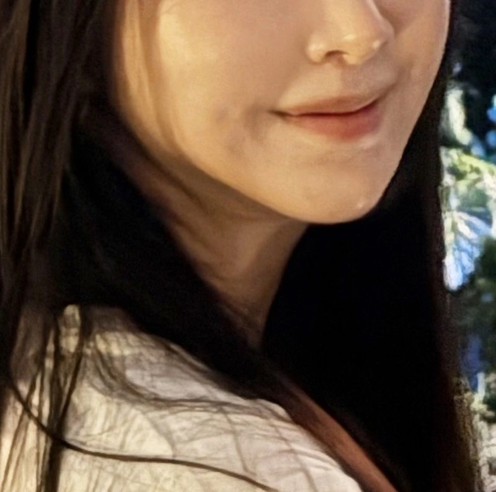
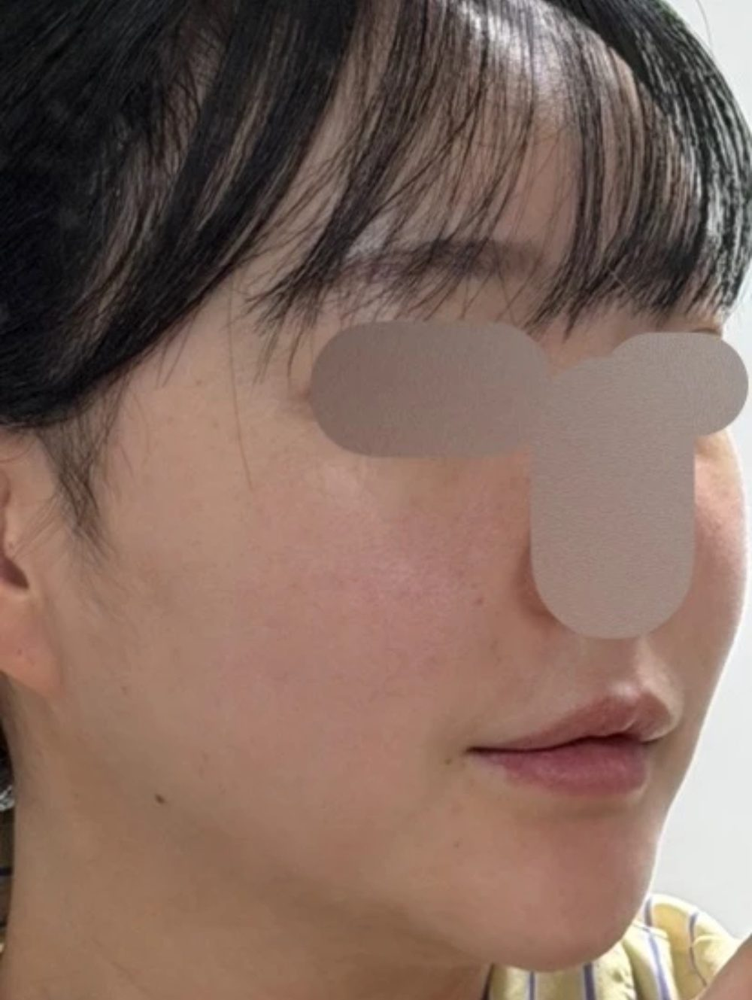

肌のハリが落ちて小じわが増え、高周波リフティングを検討されていませんか？
サーマジ FLXだけでなく、第2世代のデンシティ ノワールやSERFなど、さまざまな高周波リフティング機器が登場し、どの施術を選べばよいか迷われる方が増えています。同じ高周波リフティングなのに、何が違うのでしょうか？

チェ・ヒョンホ院長
親切、丁寧、誠実
レーザーと美容施術を、相談から施術まで自ら担当します。親切で丁寧な診療で、お一人おひとりに誠実に向き合います。
- 大韓レーザー皮膚毛髪学会 正会員
- 大韓美容形成レーザー医学会 正会員
- 大韓肥満美容学会 正会員
- 大韓フィラー学会 準会員
Reyeonk Clinicは1対1の担当医制を採用しています。担当の医療スタッフが、相談から施術、仕上げまで責任を持って対応します。
2009年の開院以来17年以上のリフティング経験をもとに、あなただけの「ひと味違い」を体感していただけます。
デンシティ ノワール、サーマジ FLX、SERFは何が違いますか？
3つの施術はいずれも、高周波を用いた高周波リフティングで、皮膚組織に熱刺激を伝えてコラーゲンの再形成を促す方式です。
| デンシティ ノワール | サーマジ FLX | SERF | |
|---|---|---|---|
| 高周波の方式 | モノポーラ＋バイポーラの組み合わせ | モノポーラ | デュアル周波数モノポーラ |
| 周波数 | モノポーラ・バイポーラの2種類の高周波 | 6.78MHz | 6.78MHz＋2MHz |
| 特徴 | 従来のデンシティをアップグレードした機器、ジェントルモード・インフィニットモード | FDA承認、20年以上にわたり安全性と効果が検証されてきた元祖の高周波リフティング | 2種類の周波数を併用 |
| 共通の原理 | 高周波エネルギーで皮膚組織に熱刺激を伝え、コラーゲンの再形成を促す | ||
エネルギーの伝わり方が異なるため、肌の厚みやハリの低下の程度、施術の目的を考慮して選ぶことをおすすめします。
デンシティ ノワール、サーマジ、SERFのうち、どれがより効果的ですか？
すべての方にもっとも効果的な機器が一つに決まっているわけではありません。
肌の厚み、顔の脂肪量、小じわ、たるみの程度によって、適したエネルギー設定や施術部位は変わります。機器の種類だけでなく、医療スタッフによる肌の診断と施術デザインも重要です。
デンシティ ノワール・サーマジ・SERFの600ショットは効果が同じですか？
同じ600ショットでも、機器ごとにチップの面積、エネルギーの伝わり方、出力設定が異なるため、同じ効果を意味するわけではありません。
フェイスライン、頬、ほうれい線まわりなど、どの部位にどれだけのエネルギーを届けるかも重要です。
どの高周波リフティングがいちばん痛くありませんか？
機器ごとに冷却システムやエネルギーの伝わり方に違いがあります。
ただし、痛みは個人の感度、施術部位、エネルギーの強さによって変わります。痛みが心配な場合は、カウンセリングで麻酔の方法とエネルギーの調整が可能かを確認することをおすすめします。
高周波リフティングの効果はどれくらい続きますか？
施術直後にハリの変化を感じる方もいますが、コラーゲンの再形成による変化は数週間から数か月にわたって現れることがあります。
持続期間や再施術の適切な時期は、肌の状態、生活習慣、加齢の進み具合によって異なります。
顔に脂肪が少なくても高周波リフティングを受けられますか？
高周波リフティングは脂肪に影響を与えないため、頬のこけなどの副作用の心配は少なめです。
ただし、顔の脂肪が少ない方や頬がこけている方は、より繊細な施術デザインが必要です。
施術前に肌の厚みと脂肪の分布を確認し、部位ごとにエネルギーの強さと照射範囲を調整することが重要です。
ウルセラと高周波リフティングを一緒に受けても大丈夫ですか？
ウルセラは集束超音波を、サーマジ・デンシティ ノワール・SERFは高周波エネルギーを利用します。
肌の状態によっては、異なるエネルギーの施術を併用する方法も検討できます。ただし、すべての方に併用施術が必要なわけではありません。
機器より先に確認したいこと
- 肌の厚みとハリの低下の程度
- 顔の脂肪量と頬のこけの有無
- 部位ごとのショット配分とエネルギー設定
- 医療スタッフによる直接のカウンセリングと施術デザイン
- 痛みの管理と正規チップの使用
デンシティ ご来院後の口コミ
Reyeonk Clinicでデンシティの施術を受けられた方の口コミです（韓国語からの翻訳）。施術の効果や満足度には個人差があります。


デンシティ、なんでこんなに痛いの、、、でも効果は良いです。体感できたのは2週間後。
個人的にはウルセラとちょっと似ていた気がします？ハリを出すにはウルセラのほうが少し良かったけれど、小じわなどとあわせて総合的な改善まで望むなら、デンシティ アルファが良さそうです！
デンシティ アルファ施術後のご来院口コミ


時間がたつにつれて、ほうれい線が薄くなり、フェイスラインが整った感じがします。本当にびっくりしました。これまで受けたリフティングレーザーの中でいちばん満足度が高かったです。
施術後は肌の調子も良くなった気がして、6か月後にまた受けるつもりです。
デンシティ アルファ施術後のご来院口コミ
口コミは個人の体験であり、施術の効果や満足度には個人差があります。
予約制と多言語対応について
完全予約制のため、待ち時間なくカウンセリングと施術を受けていただけます。
中国語・日本語・英語に対応するカウンセリングスタッフとコーディネーターがおり、ご不便なくご相談いただけます。
Reyeonk Clinicは外国人患者誘致医療機関として登録されています（登録番号 M-2022-01-08-6785）。
よくあるご質問
-
デンシティ ノワール、サーマジ、SERFは何が違いますか？
3つの施術はいずれも、高周波エネルギーで皮膚組織に熱刺激を伝え、コラーゲンの再形成を促す方式です。サーマジ FLXは6.78MHzのモノポーラ、デンシティ ノワール アルファはモノポーラとバイポーラの組み合わせ、SERFは6.78MHzと2MHzのデュアル周波数モノポーラで、エネルギーの伝わり方が異なります。
-
デンシティ ノワール、サーマジ、SERFのうち、どれがより効果的ですか？
すべての方にもっとも効果的な機器が一つに決まっているわけではありません。肌の厚み、顔の脂肪量、小じわ、たるみの程度によって適したエネルギー設定や施術部位が変わるため、機器の種類に加えて、医療スタッフの肌の診断と施術デザインが重要です。
-
デンシティ ノワール・サーマジ・SERFの600ショットは効果が同じですか？
同じ600ショットでも、機器ごとにチップの面積、エネルギーの伝わり方、出力設定が異なるため、同じ効果とは限りません。フェイスライン、頬、ほうれい線まわりなど、どの部位にどれだけのエネルギーを届けるかも重要です。
-
どの高周波リフティングがいちばん痛くありませんか？
機器ごとに冷却システムやエネルギーの伝わり方に違いはありますが、痛みは個人の感度、施術部位、エネルギーの強さによって変わります。痛みが心配な場合は、カウンセリングで麻酔の方法とエネルギーの調整が可能かを確認することをおすすめします。
-
高周波リフティングの効果はどれくらい続きますか？
施術直後にハリの変化を感じる方もいますが、コラーゲンの再形成による変化は数週間から数か月にわたって現れることがあります。持続期間や再施術の適切な時期は、肌の状態、生活習慣、加齢の進み具合によって異なります。
-
顔に脂肪が少なくても高周波リフティングを受けられますか？
高周波リフティングは脂肪に影響を与えないため、頬のこけなどの副作用の心配は少なめです。ただし、顔の脂肪が少ない方や頬がこけている方は、より繊細な施術デザインが必要で、施術前に肌の厚みと脂肪の分布を確認し、部位ごとにエネルギーの強さと照射範囲を調整することが重要です。
-
ウルセラと高周波リフティングを一緒に受けても大丈夫ですか？
ウルセラは集束超音波を、サーマジ・デンシティ ノワール・SERFは高周波エネルギーを利用します。肌の状態によっては異なるエネルギーの施術を併用する方法も検討できますが、すべての方に併用施術が必要なわけではありません。
-
デンシティ ノワール、サーマジ、SERFの違いは何ですか？
3つとも高周波でコラーゲンの再形成を促しますが、エネルギーの伝わり方が異なります。サーマジ FLXは6.78MHzのモノポーラ、デンシティ ノワール アルファはモノポーラとバイポーラの組み合わせ、SERFは6.78MHzと2MHzのデュアル周波数モノポーラです。
-
デンシティ ノワールとサーマジ、どちらがより効果的ですか？
どちらかがすべての方により効果的だとは言いにくいです。肌の厚み、たるみの程度、小じわの有無によって適した機器や設定が変わるため、まず医療スタッフの診断が大切です。
-
サーマジとSERF、どちらがよいですか？
2つの機器は周波数の構成とエネルギーの伝わり方が異なります。施術の目的、肌の状態、痛みへの感度をあわせて考慮し、カウンセリングのうえで選ぶことをおすすめします。
-
デンシティ ノワールとSERFのリフティングの違いは何ですか？
デンシティ ノワール アルファはモノポーラとバイポーラを組み合わせ、SERFは6.78MHzと2MHzのデュアル周波数モノポーラです。エネルギーの伝わり方が異なるため、施術デザインも変わることがあります。
-
高周波リフティングのうち、肌のハリの改善に向いている施術は？
ハリの改善が目的であれば、サーマジ・デンシティ ノワール・SERFのいずれも検討できます。肌の厚みやハリの低下の程度によって、適した機器とショット配分が変わります。
-
サーマジの代わりにデンシティ ノワールやSERFを受けても大丈夫ですか？
機器ごとにエネルギーの伝わり方が異なるため、単純な代替とは考えにくいです。現在の肌の状態と施術の目的を確認したうえで、合った機器を選ぶことをおすすめします。
-
デンシティ ノワール・サーマジ・SERFの600ショットの価格の違いは？
価格は、機器、チップの種類、ショット数、実施中のイベントによって異なります。正確な費用は、カウンセリング時に肌の状態に合った施術プランとあわせてご案内します。
-
コスパのよい高周波リフティングは何ですか？
価格だけで判断するより、ご自身の肌に必要なエネルギーとショット配分が合っているかが大切です。必要以上のショット数や施術を選ぶのではなく、カウンセリングでプランを立てることをおすすめします。
-
サーマジがデンシティ ノワールより高い理由は？
サーマジ FLXは、20年以上にわたり安全性と効果が検証されてきた元祖の高周波リフティング機器で、正規チップの費用などが施術価格に反映されます。実際の費用はクリニックや施術内容によって異なります。
-
デンシティ ノワール、サーマジ、SERFのうち、いちばん痛くない施術は？
痛みは機器だけでなく、個人の感度、施術部位、エネルギーの強さによって変わるため、一つに絞るのは難しいです。カウンセリングで麻酔の方法とエネルギーの調整が可能かをご確認ください。
-
睡眠麻酔なしで受けられる高周波リフティングは？
高周波リフティングは、麻酔クリームなどの局所麻酔とエネルギーの調整で行うことが多いです。睡眠麻酔の要否と麻酔の方法は、痛みへの感度に応じてカウンセリングで決めます。
-
デンシティ ノワール、サーマジ、SERFの効果はどれくらい続きますか？
コラーゲンの再形成による変化は数週間から数か月にわたって現れ、持続期間は肌の状態、生活習慣、加齢の進み具合によって個人差があります。
-
高周波リフティングの効果はいつから現れますか？
施術直後にハリの変化を感じる方もいますが、コラーゲンの再形成による変化は数週間から数か月にわたって現れることがあります。個人差があります。
-
高周波リフティングは1年に何回受ければよいですか？
決まった回数はなく、肌の状態、生活習慣、加齢の進み具合によって適切な再施術の時期は変わります。医療スタッフと相談して間隔を決めることをおすすめします。
-
顔に脂肪が少ない方に向いている高周波リフティングは？
特定の機器より、施術デザインが重要です。施術前に肌の厚みと脂肪の分布を確認し、部位ごとにエネルギーの強さと照射範囲を調整する必要があります。
-
肌が薄い方はどんなリフティングを受ければよいですか？
肌が薄いほど、エネルギー設定と施術範囲をより繊細に調整する必要があります。肌の厚みを直接確認したうえで、施術の可否と方法を決めることをおすすめします。
-
頬のこけの心配が少ない高周波リフティングは？
高周波リフティングは脂肪に影響を与えないため、頬のこけなどの副作用の心配は少なめです。ただし、顔の脂肪が少ない方や頬がこけている方は、カウンセリングで脂肪の分布を確認し、部位ごとのショット配分とエネルギー設定を調整する施術デザインが必要です。
-
ほうれい線の改善には、デンシティ ノワール・サーマジ・SERFのどれがよいですか？
ほうれい線は、たるみ、脂肪の分布、肌の厚みなど原因がさまざまで、一つの機器では決まりません。ほうれい線まわりに必要なエネルギーとショット配分を、診断のうえで設計することが重要です。
-
毛穴と小じわの改善に向いている高周波リフティングは？
毛穴や小じわも、肌の状態によってアプローチが変わります。高周波リフティングは、コラーゲンの再形成による肌のハリとキメのケアに活用されます。目的に合った機器と設定は、カウンセリングで決めます。
あなたをよく知る、Reyeonk。
Reyeonk Clinicでは、医療スタッフが肌の状態を直接確認し、お一人おひとりのお悩みに合ったリフティングプランをご提案します。むやみにショット数や施術の数を増やすのではなく、ご自身の顔に本当に必要な施術が何かを確認することが大切です。
※ 施術の効果や持続期間には個人差があり、赤み、腫れ、痛み、やけど、脂肪萎縮などの副作用が起こることがあります。
- Reyeonk Clinic
- ソウル特別市江南区彦州路172ギル64 Reyeonkビル
B1・3F・4F - 電話
- +82-2-558-5581
- KakaoTalk
- 1対1の相談はこちら
- ウェブサイト
- reyeonk.co.kr （韓国語）
- 診療時間
- 月・火・木 10:00–20:00
金 10:00–19:00
土 10:00–15:00
水・日・祝日は休診 - アクセス
- 道案内を見る
※ 本コラムは一般的な情報提供を目的としたものです。施術の効果や結果には個人差があります。診断と施術の可否は、医療スタッフとの相談を通じてご判断ください。